A Step-by-Step Guide to Object Detection in Unity with IceVision and OpenVINO Pt. 1
- Introduction
- Overview
- Setup Conda Environment
- Import Dependencies
- Configure Kaggle API
- Download the Dataset
- Inspect the Dataset
- Create Dataset Parser
- Define DataLoader Objects
- Finetune the Model
- Prepare Model for Export
- Export the Model
- Verify OpenVINO Inference
- Define Post-processing Steps
- Generate Colormap
- Summary
This tutorial will no longer receive updates as the IceVision library no longer appears in development. For the latest and improved version of this tutorial that uses PyTorch directly, please visit the new tutorial linked below:
Tutorial Links
- Part 1: Train a YOLOX model using IceVision and export it to OpenVINO.
- Part 2: Create a dynamic link library (DLL) file in Visual Studio to perform object detection with a YOLOX model using OpenVINO.
- Part 3: Perform object detection in a Unity project with OpenVINO.
- GitHub Repository
Introduction
In this three-part tutorial series, we will explore how to use IceVision and OpenVINO to perform end-to-end object detection in Unity. In part 1, we will train a YOLOX model using IceVision and export it to OpenVINO. In part 2, we will create a dynamic link library (DLL) file in Visual Studio to perform object detection with a YOLOX model using OpenVINO. Finally, in part 3, we will integrate the trained model into a Unity project to perform real-time object detection. By the end of this series, you will have a working object detection system that you can use in your Unity projects.
Unity Demo
The tutorial uses a downscaled subsample of the HaGRID (HAnd Gesture Recognition Image Dataset), which contains annotated sample images for 18 distinct hand gestures and an additional no_gesture class to account for idle hands.
Reference Images
| Class | Image |
|---|---|
| call | |
| dislike |

|
| fist | |
| four |

|
| like |

|
| mute |

|
| ok |

|
| one |

|
| palm | 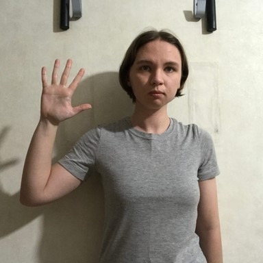 |
| peace |

|
| peace_inverted |

|
| rock |

|
| stop |

|
| stop_inverted |

|
| three |

|
| three2 |

|
| two_up |

|
| two_up_inverted |

|
One could use a model trained on this dataset to allow users to control a Unity application using hand gestures.
Overview
In part 1 of this tutorial series, we will learn how to train a YOLOX Tiny model using IceVision and export it to OpenVINO’s Intermediate Representation (IR) format. We will start by setting up a Conda environment and importing the necessary dependencies. Then, we will configure the Kaggle API to download the dataset we will use to train our model. After inspecting the dataset, we will create a parser to process the training samples and define DataLoader objects. Then, we will fine-tune the model and export it. Finally, we will perform inference with the exported model and define post-processing steps for the model output. We will then generate a colormap to visualize model predictions. By the end of this post, you will have a trained YOLOX model that you can deploy in your applications.
You can find links to view the training code and run it on Google Colab and Kaggle below.
| Jupyter Notebook | Colab | Kaggle |
|---|---|---|
| GitHub Repository | Open In Colab | Open in Kaggle |
Note: The free GPU tier for Google Colab takes approximately 11 minutes per epoch, while the free GPU tier for Kaggle Notebooks takes around 15 minutes per epoch.
Update
May 17, 2023: Google Colab and Kaggle Notebooks now use an updated Python version that conflicts with this tutorial’s package versions. Please create a local conda environment to run the tutorial code.
Setup Conda Environment
The IceVision library builds upon specific versions of libraries like fastai and mmdetection, and the cumulative dependency requirements mean it is best to use a dedicated virtual environment. Below are the steps to create a virtual environment using Conda. Be sure to execute each command in the provided order.
Important: IceVision currently only supports Linux/macOS. Try using WSL (Windows Subsystem for Linux) if training locally on Windows.
Install CUDA Toolkit
You might need to install the CUDA Toolkit on your system if you plan to run the training code locally. CUDA requires an Nvidia GPU. Version 11.1.0 of the toolkit is available at the link below. Both Google Colab and Kaggle Notebooks already have CUDA installed.
Conda environment setup steps
# create a new conda environment
conda create --name icevision python==3.8
# activate the environment
conda activate icevision
# install PyTorch and torchvision
pip install torch==1.10.0+cu111 torchvision==0.11.1+cu111 -f https://download.pytorch.org/whl/torch_stable.html
# install mmcv-full
pip install mmcv-full==1.3.17 -f https://download.openmmlab.com/mmcv/dist/cu111/torch1.10.0/index.html
# install mmdet
pip install mmdet==2.17.0
# install icevision
pip install icevision==0.11.0
# install icedata
pip install icedata==0.5.1
# install setuptools
pip install setuptools==59.5.0
# install OpenVINO developer tools
pip install openvino-dev
# install package for generating visually distinct colours
pip install distinctipy
# install jupyter
pip install jupyter
# install onnxruntime
pip install onnxruntime
# install onnx-simplifier
pip install onnx-simplifier
# install the kaggle api
pip install kaggleThe mmdet package contains the pretrained YOLOX Tiny model we will finetune with IceVision. The package depends on the mmcv-full library, which is picky about the CUDA version used by PyTorch. We need to install the PyTorch version with the exact CUDA version expected by mmcv-full.
The icevision package provides the functionality for data curation, data transforms, and training loops we’ll use to train the model. The icedata package provides the functionality we’ll use to create a custom parser to read the dataset.
The openvino-dev pip package contains the model-conversion script to convert trained models from ONNX to OpenVINO’s IR format.
We’ll use the distinctipy pip package to generate a visually distinct colormap for drawing bounding boxes on images.
The ONNX models generated by PyTorch are not always the most concise. We can use the onnx-simplifier package to tidy up the exported model. This step is entirely optional.
Original ONNX model (Netron)
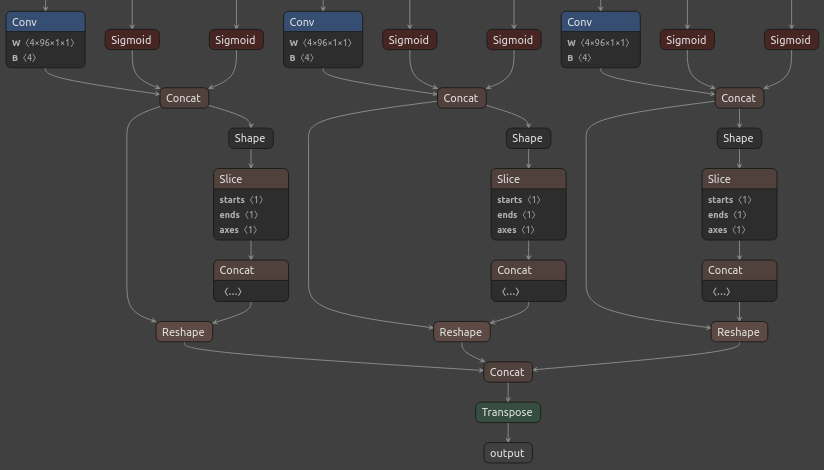
Simplified ONNX model (Netron)
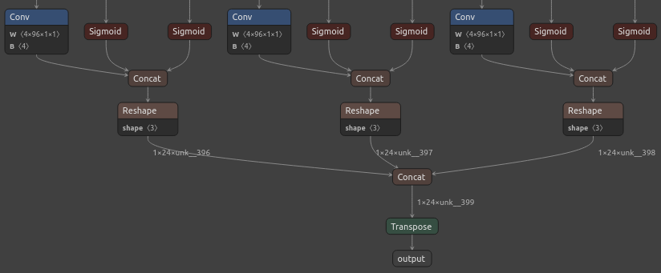
Colab and Kaggle Setup Requirements
When running the training code on Google Colab and Kaggle Notebooks, we need to uninstall several packages before installing IceVision and its dependencies to avoid conflicts. The platform-specific setup steps are at the top of the notebooks linked above.
Import Dependencies
We will start by importing the IceVision library and configuring Pandas. When you import the IceVision library for the first time, it will automatically download some additional resources that it needs to function correctly.
Import IceVision library
# Import all the necessary modules from the icevision package
from icevision.all import *Import and configure Pandas
# Import the pandas package
import pandas as pd
# Set the max column width to None
pd.set_option('max_colwidth', None)
# Set the max number of rows and columns to None
pd.set_option('display.max_rows', None)
pd.set_option('display.max_columns', None)Configure Kaggle API
The Kaggle API tool requires an API Key for a Kaggle account. Sign in or create a Kaggle account using the link below, then click the Create New API Token button.
- Kaggle Account Settings: https://www.kaggle.com/me/account

Enter Kaggle username and API token
creds = '{"username":"","key":""}'Save Kaggle credentials if none are present
# Set the path to the kaggle.json file
cred_path = Path('~/.kaggle/kaggle.json').expanduser()
# Check if the file already exists
if not cred_path.exists():
# Create the directory if it does not exist
cred_path.parent.mkdir(exist_ok=True)
# Save the API key to the file
cred_path.write_text(creds)
# Set the file permissions to be readable and writable by the current user
cred_path.chmod(0o600)Import Kaggle API
# Import the API module from the kaggle package
from kaggle import apiDownload the Dataset
Now that we have our Kaggle credentials set, we need to define the dataset and where to store it. I made two versions of the dataset available on Kaggle. One contains approximately thirty thousand training samples, and the other has over one hundred and twenty thousand.
We’ll use the default archive and data folders for the fastai library (installed with IceVision) to store the compressed and uncompressed datasets.
Define path to dataset
# Import the URLs object from the fastai.data.external module
from fastai.data.external import URLs# Set the name of the dataset
dataset_name = 'hagrid-sample-30k-384p'
# dataset_name = 'hagrid-sample-120k-384p'
# Construct the Kaggle dataset name by combining the username and dataset name
kaggle_dataset = f'innominate817/{dataset_name}'
# Get the path to the directory where datasets are stored
archive_dir = URLs.path()
# Create the path to the data directory
dataset_dir = archive_dir/'../data'
# Create the path to the zip file that contains the dataset
archive_path = Path(f'{archive_dir}/{dataset_name}.zip')
# Create the path to the directory where the dataset will be extracted
dataset_path = Path(f'{dataset_dir}/{dataset_name}')Define method to extract the dataset from an archive file
def file_extract(fname, dest=None):
"""
Extract the specified file to the destination directory using `tarfile` or `zipfile`.
Args:
fname (str): The path to the file to be extracted.
dest (str): The path to the directory where the file will be extracted. If not specified, the file will be extracted to the same directory as the source file.
Returns:
None
Raises:
Exception: If the file has an unrecognized file extension.
"""
# Set the destination directory to the parent directory of the file if not specified
if dest is None: dest = Path(fname).parent
# Convert the file path to a string
fname = str(fname)
# Check the file extension and extract the file using the appropriate module
if fname.endswith('gz'):
tarfile.open(fname, 'r:gz').extractall(dest)
elif fname.endswith('zip'):
zipfile.ZipFile(fname).extractall(dest)
else:
raise Exception(f'Unrecognized archive: {fname}')The archive file for the 30K dataset is 4GB, so we don’t want to download it more than necessary.
Download the dataset if it is not present
# Check if the dataset zip file already exists
if not archive_path.exists():
# Download the dataset from Kaggle
api.dataset_download_cli(kaggle_dataset, path=archive_dir)
# Extract the dataset zip file to the data directory
file_extract(fname=archive_path, dest=dataset_dir)Inspect the Dataset
We can start inspecting the dataset once it finishes downloading. In this step, we will get the file paths for the images and annotations and examine one of the training images. That will give us a better understanding of the dataset and its structure.
Define paths to image and annotation folders
# Create a list of the items in the 'dataset_path' directory
dir_content = list(dataset_path.ls())
# Get the path of the 'ann_train_val' directory
annotation_dir = dataset_path/'ann_train_val'
# Remove the 'ann_train_val' directory from the list of items
dir_content.remove(annotation_dir)
# Get the path of the remaining directory, which is assumed to be the image directory
img_dir = dir_content[0]
# Print the paths of the annotation and image directories
annotation_dir, img_dir(Path('/home/innom-dt/.fastai/archive/../data/hagrid-sample-30k-384p/ann_train_val'),
Path('/home/innom-dt/.fastai/archive/../data/hagrid-sample-30k-384p/hagrid_30k'))The bounding box annotations for each image are stored in JSON files organized by object class. The files contain annotations for all 552,992 images from the full HaGRID dataset.
Inspect the annotation folder
# Get a list of files in the 'annotation_dir' directory
file_list = list(annotation_dir.ls())
# Display the names of the files using a Pandas DataFrame
pd.DataFrame([file.name for file in file_list])| 0 | |
|---|---|
| 0 | call.json |
| 1 | dislike.json |
| 2 | fist.json |
| 3 | four.json |
| 4 | like.json |
| 5 | mute.json |
| 6 | ok.json |
| 7 | one.json |
| 8 | palm.json |
| 9 | peace.json |
| 10 | peace_inverted.json |
| 11 | rock.json |
| 12 | stop.json |
| 13 | stop_inverted.json |
| 14 | three.json |
| 15 | three2.json |
| 16 | two_up.json |
| 17 | two_up_inverted.json |
The sample images are stored in folders separated by object class.
Inspect the image folder
# Get a list of folders in the 'img_dir' directory
folder_list = list(img_dir.ls())
# Display the names of the folders using a Pandas DataFrame
pd.DataFrame([folder.name for folder in folder_list])| 0 | |
|---|---|
| 0 | train_val_call |
| 1 | train_val_dislike |
| 2 | train_val_fist |
| 3 | train_val_four |
| 4 | train_val_like |
| 5 | train_val_mute |
| 6 | train_val_ok |
| 7 | train_val_one |
| 8 | train_val_palm |
| 9 | train_val_peace |
| 10 | train_val_peace_inverted |
| 11 | train_val_rock |
| 12 | train_val_stop |
| 13 | train_val_stop_inverted |
| 14 | train_val_three |
| 15 | train_val_three2 |
| 16 | train_val_two_up |
| 17 | train_val_two_up_inverted |
Get image file paths
# Get a list of image files in the 'img_dir' directory
files = get_image_files(img_dir)
# Print the number of image files in the list
len(files)31833Inspect files
# Get the first and last file in the 'files' list
file1, file2 = files[0], files[-1]
# Display the first and last files using a Pandas DataFrame
pd.DataFrame([file1, file2])| 0 | |
|---|---|
| 0 | /home/innom-dt/.fastai/archive/../data/hagrid-sample-30k-384p/hagrid_30k/train_val_call/00005c9c-3548-4a8f-9d0b-2dd4aff37fc9.jpg |
| 1 | /home/innom-dt/.fastai/archive/../data/hagrid-sample-30k-384p/hagrid_30k/train_val_two_up_inverted/fff4d2f6-9890-4225-8d9c-73a02ba8f9ac.jpg |
The sample images are all downscaled to 384p.
Inspect one of the training images
# Import the PIL library
import PIL
# Open the first file in the 'files' list as a RGB image
img = PIL.Image.open(files[0]).convert('RGB')
# Print the dimensions of the image
print(f"Image Dims: {img.shape}")
# Show the image
imgImage Dims: (512, 384)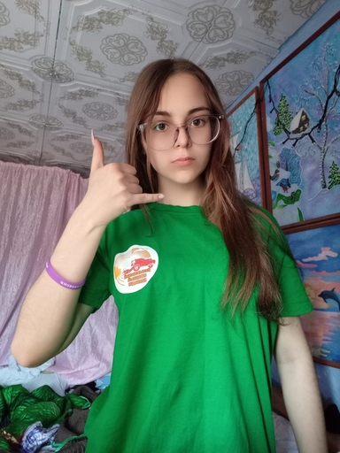
To make it easier to work with the dataset, we will create a dictionary that maps image names to file paths. The dictionary will allow us to retrieve the file path for a given image efficiently.
Create a dictionary that maps image names to file paths
# Create a dictionary where the keys are the filenames without the file extensions of the files in the 'files' list,
# and the values are the file paths
img_dict = {file.stem : file for file in files}
# Display the first five entries from the dictionary using a Pandas DataFrame
pd.DataFrame.from_dict(img_dict, orient='index').head()| 0 | |
|---|---|
| 00005c9c-3548-4a8f-9d0b-2dd4aff37fc9 | /home/innom-dt/.fastai/archive/../data/hagrid-sample-30k-384p/hagrid_30k/train_val_call/00005c9c-3548-4a8f-9d0b-2dd4aff37fc9.jpg |
| 0020a3db-82d8-47aa-8642-2715d4744db5 | /home/innom-dt/.fastai/archive/../data/hagrid-sample-30k-384p/hagrid_30k/train_val_call/0020a3db-82d8-47aa-8642-2715d4744db5.jpg |
| 004ac93f-0f7c-49a4-aadc-737e0ad4273c | /home/innom-dt/.fastai/archive/../data/hagrid-sample-30k-384p/hagrid_30k/train_val_call/004ac93f-0f7c-49a4-aadc-737e0ad4273c.jpg |
| 006cac69-d3f0-47f9-aac9-38702d038ef1 | /home/innom-dt/.fastai/archive/../data/hagrid-sample-30k-384p/hagrid_30k/train_val_call/006cac69-d3f0-47f9-aac9-38702d038ef1.jpg |
| 00973fac-440e-4a56-b60c-2a06d5fb155d | /home/innom-dt/.fastai/archive/../data/hagrid-sample-30k-384p/hagrid_30k/train_val_call/00973fac-440e-4a56-b60c-2a06d5fb155d.jpg |
Get list of annotation file paths
# Import the 'os' and 'glob' modules
import os
from glob import glob# Get a list of paths to JSON files in the 'annotation_dir' directory
annotation_paths = glob(os.path.join(annotation_dir, "*.json"))
# Display the JSON file paths using a Pandas DataFrame
pd.DataFrame(annotation_paths)| 0 | |
|---|---|
| 0 | /home/innom-dt/.fastai/archive/../data/hagrid-sample-30k-384p/ann_train_val/call.json |
| 1 | /home/innom-dt/.fastai/archive/../data/hagrid-sample-30k-384p/ann_train_val/palm.json |
| 2 | /home/innom-dt/.fastai/archive/../data/hagrid-sample-30k-384p/ann_train_val/rock.json |
| 3 | /home/innom-dt/.fastai/archive/../data/hagrid-sample-30k-384p/ann_train_val/stop_inverted.json |
| 4 | /home/innom-dt/.fastai/archive/../data/hagrid-sample-30k-384p/ann_train_val/two_up.json |
| 5 | /home/innom-dt/.fastai/archive/../data/hagrid-sample-30k-384p/ann_train_val/four.json |
| 6 | /home/innom-dt/.fastai/archive/../data/hagrid-sample-30k-384p/ann_train_val/three.json |
| 7 | /home/innom-dt/.fastai/archive/../data/hagrid-sample-30k-384p/ann_train_val/stop.json |
| 8 | /home/innom-dt/.fastai/archive/../data/hagrid-sample-30k-384p/ann_train_val/one.json |
| 9 | /home/innom-dt/.fastai/archive/../data/hagrid-sample-30k-384p/ann_train_val/three2.json |
| 10 | /home/innom-dt/.fastai/archive/../data/hagrid-sample-30k-384p/ann_train_val/peace_inverted.json |
| 11 | /home/innom-dt/.fastai/archive/../data/hagrid-sample-30k-384p/ann_train_val/ok.json |
| 12 | /home/innom-dt/.fastai/archive/../data/hagrid-sample-30k-384p/ann_train_val/like.json |
| 13 | /home/innom-dt/.fastai/archive/../data/hagrid-sample-30k-384p/ann_train_val/fist.json |
| 14 | /home/innom-dt/.fastai/archive/../data/hagrid-sample-30k-384p/ann_train_val/mute.json |
| 15 | /home/innom-dt/.fastai/archive/../data/hagrid-sample-30k-384p/ann_train_val/peace.json |
| 16 | /home/innom-dt/.fastai/archive/../data/hagrid-sample-30k-384p/ann_train_val/two_up_inverted.json |
| 17 | /home/innom-dt/.fastai/archive/../data/hagrid-sample-30k-384p/ann_train_val/dislike.json |
After getting the list of annotation file paths, we will create an annotation DataFrame that contains all of the annotation data for the dataset. This DataFrame will allow us to manipulate and query the annotations more easily. We’ll then filter out annotations for images not present in the current subsample.
Create annotations dataframe
# Create a generator that yields Pandas DataFrames containing the data from each JSON file
cls_dataframes = (pd.read_json(f).transpose() for f in annotation_paths)
# Concatenate the DataFrames into a single DataFrame
annotation_df = pd.concat(cls_dataframes, ignore_index=False)
# Keep only the rows that correspond to the filenames in the 'img_dict' dictionary
annotation_df = annotation_df.loc[list(img_dict.keys())]
# Print the first 5 rows of the DataFrame
annotation_df.head()| bboxes | labels | leading_hand | leading_conf | user_id | |
|---|---|---|---|---|---|
| 00005c9c-3548-4a8f-9d0b-2dd4aff37fc9 | [[0.23925175, 0.28595301, 0.25055143, 0.20777627]] | [call] | right | 1 | 5a389ffe1bed6660a59f4586c7d8fe2770785e5bf79b09334aa951f6f119c024 |
| 0020a3db-82d8-47aa-8642-2715d4744db5 | [[0.5801012999999999, 0.53265105, 0.14562138, 0.12286348]] | [call] | left | 1 | 0d6da2c87ef8eabeda2dcfee2dc5b5035e878137a91b149c754a59804f3dce32 |
| 004ac93f-0f7c-49a4-aadc-737e0ad4273c | [[0.46294793, 0.26419774, 0.13834939000000002, 0.10784189]] | [call] | right | 1 | d50f05d9d6ca9771938cec766c3d621ff863612f9665b0e4d991c086ec04acc9 |
| 006cac69-d3f0-47f9-aac9-38702d038ef1 | [[0.38799208, 0.44643898, 0.27068787, 0.18277858]] | [call] | right | 1 | 998f6ad69140b3a59cb9823ba680cce62bf2ba678058c2fc497dbbb8b22b29fe |
| 00973fac-440e-4a56-b60c-2a06d5fb155d | [[0.40980118, 0.38144198, 0.08338464, 0.06229785], [0.6122035100000001, 0.6780825500000001, 0.04700606, 0.07640522]] | [call, no_gesture] | right | 1 | 4bb3ee1748be58e05bd1193939735e57bb3c0ca59a7ee38901744d6b9e94632e |
Notice that one of the samples contains a no_gesture label to identify an idle hand in the image.
We can retrieve the annotation data for a specific image file using its name.
Inspect annotation data for sample image
# Get the filename without the file extension of the first file in the 'files' list
file_id = files[0].stem
# Print the filename
file_id'00005c9c-3548-4a8f-9d0b-2dd4aff37fc9'The image file names are the index values for the annotation DataFrame.
# Get the row from the 'annotation_df' DataFrame corresponding to the 'file_id'
annotation_df.loc[file_id].to_frame()| 00005c9c-3548-4a8f-9d0b-2dd4aff37fc9 | |
|---|---|
| bboxes | [[0.23925175, 0.28595301, 0.25055143, 0.20777627]] |
| labels | [call] |
| leading_hand | right |
| leading_conf | 1 |
| user_id | 5a389ffe1bed6660a59f4586c7d8fe2770785e5bf79b09334aa951f6f119c024 |
The bboxes entry contains the [top-left-X-position, top-left-Y-position, width, height] information for any bounding boxes. The values are scaled based on the image dimensions. We multiply top-left-X-position and width values by the image width and multiply top-left-Y-position and height values by the image height to obtain the actual values.
We need a font file to annotate the images with class labels. We can download one from Google Fonts.
Download font file
# Define the filename of the font file
font_file = 'KFOlCnqEu92Fr1MmEU9vAw.ttf'
# If the font file does not exist, download it
if not os.path.exists(font_file):
!wget https://fonts.gstatic.com/s/roboto/v30/$font_fileAnnotate sample image
# Import the ImageDraw class from the PIL package
from PIL import ImageDraw# Get the width and height of the image
width, height = img.size
# Create a copy of the image
annotated_img = img.copy()
# Create an ImageDraw object for drawing on the image
draw = ImageDraw.Draw(annotated_img)
# Set the font size
fnt_size = 25
# Get the row from the 'annotation_df' DataFrame corresponding to the 'file_id'
annotation = annotation_df.loc[file_id]
# Loop through the bounding boxes and labels in the 'annotation' DataFrame
for i in range(len(annotation['labels'])):
# Get the bounding box coordinates
x, y, w, h = annotation['bboxes'][i]
# Scale the coordinates to the size of the image
x *= width
y *= height
w *= width
h *= height
# Create a tuple of coordinates for the bounding box
shape = (x, y, x+w, y+h)
# Draw the bounding box on the image
draw.rectangle(shape, outline='red')
# Load the font file
fnt = PIL.ImageFont.truetype(font_file, fnt_size)
# Draw the label on the image
draw.multiline_text((x, y-fnt_size-5), f"{annotation['labels'][i]}", font=fnt, fill='red')
# Print the dimensions of the image
print(annotated_img.size)
# Show the image
annotated_img(384, 512)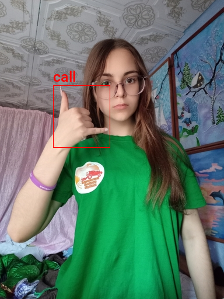
We need to provide IceVision with a class map that maps index values to unique class names.
Create a class map
# Get a list of unique labels in the 'annotation_df' DataFrame
labels = annotation_df['labels'].explode().unique().tolist()
# Display labels using a Pandas DataFrame
pd.DataFrame(labels)| 0 | |
|---|---|
| 0 | call |
| 1 | no_gesture |
| 2 | dislike |
| 3 | fist |
| 4 | four |
| 5 | like |
| 6 | mute |
| 7 | ok |
| 8 | one |
| 9 | palm |
| 10 | peace |
| 11 | peace_inverted |
| 12 | rock |
| 13 | stop |
| 14 | stop_inverted |
| 15 | three |
| 16 | three2 |
| 17 | two_up |
| 18 | two_up_inverted |
IceVision adds an additional background class at index 0.
# Create a ClassMap object using the list of labels
class_map = ClassMap(labels)
# Print the ClassMap object
class_map<ClassMap: {'background': 0, 'call': 1, 'no_gesture': 2, 'dislike': 3, 'fist': 4, 'four': 5, 'like': 6, 'mute': 7, 'ok': 8, 'one': 9, 'palm': 10, 'peace': 11, 'peace_inverted': 12, 'rock': 13, 'stop': 14, 'stop_inverted': 15, 'three': 16, 'three2': 17, 'two_up': 18, 'two_up_inverted': 19}>Note: The
backgroundclass is not included in the final model.
Create Dataset Parser
To create a custom dataset parser for object detection, we can use the template for an object detection record and the template for an object detection parser.
View template for an object detection record
# Create an ObjectDetectionRecord object
template_record = ObjectDetectionRecord()
# Print the ObjectDetectionRecord object
template_recordBaseRecord
common:
- Image size None
- Record ID: None
- Filepath: None
- Img: None
detection:
- Class Map: None
- Labels: []
- BBoxes: []View template for an object detection parser
# Generate a template parser for an object detection dataset using the ObjectDetectionRecord object
Parser.generate_template(template_record)class MyParser(Parser):
def __init__(self, template_record):
super().__init__(template_record=template_record)
def __iter__(self) -> Any:
def __len__(self) -> int:
def record_id(self, o: Any) -> Hashable:
def parse_fields(self, o: Any, record: BaseRecord, is_new: bool):
record.set_img_size(<ImgSize>)
record.set_filepath(<Union[str, Path]>)
record.detection.set_class_map(<ClassMap>)
record.detection.add_labels(<Sequence[Hashable]>)
record.detection.add_bboxes(<Sequence[BBox]>)As mentioned earlier, we need the dimensions for an image to scale the corresponding bounding box information. The dataset contains images with different resolutions, so we need to check for each image.
Define custom parser class
# Define a subclass of the 'Parser' class
class HagridParser(Parser):
# Define the constructor
def __init__(self, template_record, annotations_df, img_dict, class_map):
# Call the parent class constructor
super().__init__(template_record=template_record)
# Store the 'img_dict' and 'annotations_df' objects as instance variables
self.img_dict = img_dict
self.df = annotations_df
# Store the 'class_map' object as an instance variable
self.class_map = class_map
# Define the '__iter__' method
def __iter__(self) -> Any:
# Yield the rows of the 'annotations_df' DataFrame
for o in self.df.itertuples(): yield o
# Define the '__len__' method
def __len__(self) -> int:
# Return the number of rows in the 'annotations_df' DataFrame
return len(self.df)
# Define the 'record_id' method
def record_id(self, o: Any) -> Hashable:
# Return the index of the row
return o.Index
# Define the 'parse_fields' method
def parse_fields(self, o: Any, record: BaseRecord, is_new: bool):
# Get the file path for the corresponding image
filepath = self.img_dict[o.Index]
print(filepath)
# Open the image and get its width and height
width, height = PIL.Image.open(filepath).convert('RGB').size
# Set the size of the image in the 'record' object
record.set_img_size(ImgSize(width=width, height=height))
# Set the file path of the image in the 'record' object
record.set_filepath(filepath)
# Set the 'class_map' in the 'record' object
record.detection.set_class_map(self.class_map)
# Add the labels to the 'record' object
record.detection.add_labels(o.labels)
# Create an empty list for the bounding boxes
bbox_list = []
# Loop through the labels
for i, label in enumerate(o.labels):
# Get the bounding box coordinates
x = o.bboxes[i][0]*width
y = o.bboxes[i][1]*height
w = o.bboxes[i][2]*width
h = o.bboxes[i][3]*height
# Create a BBox object and add it to the 'bbox_list'
bbox_list.append(BBox.from_xywh(x, y, w, h))
# Add the bounding boxes to the 'record' object
record.detection.add_bboxes(bbox_list)We can then create a parser object using the custom parser class.
Create a custom parser object
# Create a HagridParser object
parser = HagridParser(template_record, annotation_df, img_dict, class_map)
# Get the number of rows in the 'annotation_df' DataFrame
num_rows = len(parser)
# Print the number of rows
print(num_rows)31833We use the parser object to parse annotations and create records.
Parse annotations to create records
# Create a 'RandomSplitter' object
data_splitter = RandomSplitter([0.8, 0.2])
# Use the 'parse' method to split the data into training and validation sets
train_records, valid_records = parser.parse(data_splitter, cache_filepath=f'{dataset_name}-cache.pkl')Finally, we can inspect the training records to ensure the parser works correctly.
Inspect training records
# Print the first element of the 'train_records'
print(train_records[0])BaseRecord
common:
- Filepath: /mnt/980SSD_1TB_2/Datasets/hagrid-sample-30k-384p/hagrid_30k/train_val_one/2507aacb-43d2-4114-91f1-008e3c7a181c.jpg
- Img: None
- Record ID: 2507aacb-43d2-4114-91f1-008e3c7a181c
- Image size ImgSize(width=640, height=853)
detection:
- BBoxes: [<BBox (xmin:153.0572608, ymin:197.40873228, xmax:213.5684992, ymax:320.45228481000004)>, <BBox (xmin:474.20276479999995, ymin:563.67557885, xmax:520.8937472, ymax:657.61167499)>]
- Class Map: <ClassMap: {'background': 0, 'call': 1, 'no_gesture': 2, 'dislike': 3, 'fist': 4, 'four': 5, 'like': 6, 'mute': 7, 'ok': 8, 'one': 9, 'palm': 10, 'peace': 11, 'peace_inverted': 12, 'rock': 13, 'stop': 14, 'stop_inverted': 15, 'three': 16, 'three2': 17, 'two_up': 18, 'two_up_inverted': 19}>
- Labels: [9, 2]# Use the 'show_record' function to display the first element of the 'train_records' object with annotations
show_record(train_records[0], figsize = (10,10), display_label=True)
# Use the 'show_records' function to display the second, third, and fourth elements of the 'train_records' list with annotations
show_records(train_records[1:4], ncols=3,display_label=True)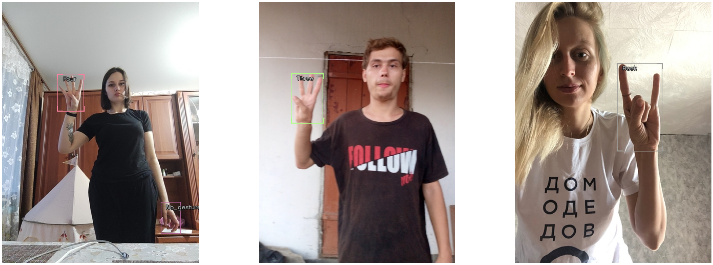
Define DataLoader Objects
The YOLOX model examines an input image using the stride values [8, 16, 32] to detect objects of various sizes.
The max number of detections depends on the input resolution and these stride values. Given a 384x512 image, the model will make (384/8)*(512/8) + (384/16)*(512/16) + (384/32)*(512/32) = 4032 predictions. Although, many of those predictions get filtered out during post-processing.
Here, we can see the difference in results when using a single stride value in isolation with a YOLOX model trained on the COCO dataset.
Stride 8

Stride 16

Stride 32
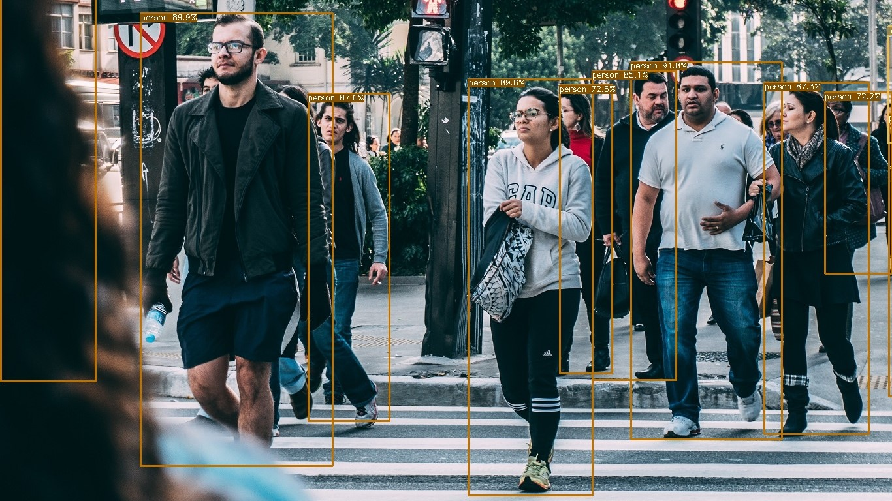
Define stride values
# Define a list of 'strides'
strides = [8, 16, 32]
# Get the maximum value in the 'strides' list
max_stride = max(strides)We need to set the input height and width to multiples of the highest stride value (i.e., 32).
Select a multiple of the max stride value as the input resolution
# Show a list of input resolutions by multiplying the maximum stride by numbers in the range 7-20
[max_stride*i for i in range(7,21)][224, 256, 288, 320, 352, 384, 416, 448, 480, 512, 544, 576, 608, 640] Define input resolution
# Define the size of the image
image_size = 384
# Define the presize of the image
presize = 512Note: You can lower the image_size to reduce training time at the cost of a potential decrease in accuracy.
IceVision provides several default methods for data augmentation to help the model generalize. It automatically updates the bounding box information for an image based on the applied augmentations.
Define Transforms
# Show the default augmentations included with the 'aug_tfms' function using a Pandas DataFrame
pd.DataFrame(tfms.A.aug_tfms(size=image_size, presize=presize))| 0 | |
|---|---|
| 0 | SmallestMaxSize(always_apply=False, p=1, max_size=512, interpolation=1) |
| 1 | HorizontalFlip(always_apply=False, p=0.5) |
| 2 | ShiftScaleRotate(always_apply=False, p=0.5, shift_limit_x=(-0.0625, 0.0625), shift_limit_y=(-0.0625, 0.0625), scale_limit=(-0.09999999999999998, 0.10000000000000009), rotate_limit=(-15, 15), interpolation=1, border_mode=4, value=None, mask_value=None) |
| 3 | RGBShift(always_apply=False, p=0.5, r_shift_limit=(-10, 10), g_shift_limit=(-10, 10), b_shift_limit=(-10, 10)) |
| 4 | RandomBrightnessContrast(always_apply=False, p=0.5, brightness_limit=(-0.2, 0.2), contrast_limit=(-0.2, 0.2), brightness_by_max=True) |
| 5 | Blur(always_apply=False, p=0.5, blur_limit=(1, 3)) |
| 6 | OneOrOther([RandomSizedBBoxSafeCrop(always_apply=False, p=0.5, height=384, width=384, erosion_rate=0.0, interpolation=1),LongestMaxSize(always_apply=False, p=1, max_size=384, interpolation=1),], p=0.5) |
| 7 | PadIfNeeded(always_apply=False, p=1.0, min_height=384, min_width=384, pad_height_divisor=None, pad_width_divisor=None, border_mode=0, value=[124, 116, 104], mask_value=None) |
# Show the transforms included with the 'resize_and_pad' function using a Pandas DataFrame
pd.DataFrame(tfms.A.resize_and_pad(size=image_size))| 0 | |
|---|---|
| 0 | LongestMaxSize(always_apply=False, p=1, max_size=384, interpolation=1) |
| 1 | PadIfNeeded(always_apply=False, p=1.0, min_height=384, min_width=384, pad_height_divisor=None, pad_width_divisor=None, border_mode=0, value=[124, 116, 104], mask_value=None) |
# Define the 'train_tfms' adapter using the 'Adapter' method and the 'aug_tfms' function
train_tfms = tfms.A.Adapter([*tfms.A.aug_tfms(size=image_size, presize=presize), tfms.A.Normalize()])
# Define the 'valid_tfms' adapter using the 'Adapter' method and the 'resize_and_pad' function
valid_tfms = tfms.A.Adapter([*tfms.A.resize_and_pad(image_size), tfms.A.Normalize()])We can extract the normalization stats from the tfms.A.Normalize() method for future use. We’ll use these same stats when performing inference with the trained model.
Get normalization stats
# Get the mean of the Normalize() transformation
mean = tfms.A.Normalize().mean
# Get the standard deviation of the Normalize() transformation
std = tfms.A.Normalize().std
# Print the mean and standard deviation
mean, std((0.485, 0.456, 0.406), (0.229, 0.224, 0.225))Next, we create dataset objects for the training and validation datasets using the defined transforms and normalization stats.
Define Datasets
# Create a Dataset object using the 'train_records' and 'train_tfms' variables
train_ds = Dataset(train_records, train_tfms)
# Create a Dataset object using the 'valid_records' and 'valid_tfms' variables
valid_ds = Dataset(valid_records, valid_tfms)
# Print the 'train_ds' and 'valid_ds' objects
train_ds, valid_ds(<Dataset with 25466 items>, <Dataset with 6367 items>)We can apply the image augmentations to a sample training image to demonstrate the effects of data augmentation.
Apply augmentations to a training sample
# Create a list of three samples from the 'train_ds' dataset object
samples = [train_ds[0] for _ in range(3)]
# Show the samples using the 'show_samples' function
show_samples(samples, ncols=3)
Once the datasets are defined, we can specify YOLOX as the model type for training.
Define model type
# Set the model type to YOLOX
model_type = models.mmdet.yoloxWe’ll use a model pretrained on the COCO dataset rather than train a new model from scratch.
Define backbone
# Create a YOLOX Tiny backbone for the model
backbone = model_type.backbones.yolox_tiny_8x8(pretrained=True)
# Show the backbone information using a Pandas Dataframe
pd.DataFrame.from_dict(backbone.__dict__, orient='index')| 0 | |
|---|---|
| model_name | yolox |
| config_path | /home/innom-dt/.icevision/mmdetection_configs/mmdetection_configs-2.16.0/configs/yolox/yolox_tiny_8x8_300e_coco.py |
| weights_url | https://download.openmmlab.com/mmdetection/v2.0/yolox/yolox_tiny_8x8_300e_coco/yolox_tiny_8x8_300e_coco_20210806_234250-4ff3b67e.pth |
| pretrained | True |
Define batch size
# Set the batch size
bs = 32Note: Adjust the batch size based on the available GPU memory.
Define DataLoaders
# Create a DataLoader for the training set
train_dl = model_type.train_dl(train_ds, batch_size=bs, num_workers=2, shuffle=True)
# Create a DataLoader for the validation set
valid_dl = model_type.valid_dl(valid_ds, batch_size=bs, num_workers=2, shuffle=False)Note: Be careful when increasing the number of workers. There is a bug that significantly increases system memory usage with more workers.
Finetune the Model
To finetune the YOLOX model, we must first instantiate the model and define metrics to track during training.
Instantiate the model
# Create a YOLOX Tiny model
model = model_type.model(backbone=backbone(pretrained=True), num_classes=parser.class_map.num_classes) Define metrics
# Define a list of metrics to evaluate the model
metrics = [COCOMetric(metric_type=COCOMetricType.bbox)]We can then create a Learner object to find the learning rate and handle the training loop.
Define Learner object
# Create a fastai learner object to train and evaluate the YOLOX Tiny model
learn = model_type.fastai.learner(dls=[train_dl, valid_dl], model=model, metrics=metrics)Find learning rate
# Use the learning rate finder to find a good learning rate for the YOLOX Tiny model
suggested_lrs = learn.lr_find()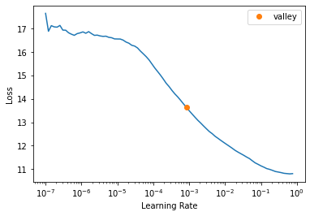
Define learning rate
# Use the suggested learning rate identified by the learning rate finder
lr = suggested_lrs.valley
lr0.0008317637839354575Define number of epochs
# Set the number of epochs to train the YOLOX Tiny model
epochs = 20After defining the training parameters, we can finetune the model by training it on the training dataset.
Finetune model
# Train the YOLOX Tiny model
learn.fine_tune(epochs, lr, freeze_epochs=1)| epoch | train_loss | valid_loss | COCOMetric | time |
|---|---|---|---|---|
| 0 | 6.054967 | 5.384349 | 0.357238 | 03:24 |
| epoch | train_loss | valid_loss | COCOMetric | time |
|---|---|---|---|---|
| 0 | 3.794365 | 3.506713 | 0.605573 | 03:40 |
| 1 | 3.312004 | 2.977496 | 0.654320 | 03:40 |
| 2 | 3.017060 | 3.090266 | 0.606374 | 03:42 |
| 3 | 2.881786 | 2.837017 | 0.655119 | 03:48 |
| 4 | 2.760416 | 2.978580 | 0.616788 | 03:50 |
| 5 | 2.658237 | 2.742451 | 0.660538 | 03:31 |
| 6 | 2.595560 | 2.547496 | 0.683073 | 03:34 |
| 7 | 2.440215 | 2.707062 | 0.640533 | 03:35 |
| 8 | 2.332424 | 2.616575 | 0.658988 | 03:34 |
| 9 | 2.292744 | 2.278664 | 0.727411 | 03:33 |
| 10 | 2.165260 | 2.263503 | 0.714858 | 03:32 |
| 11 | 2.114893 | 2.221797 | 0.724567 | 03:34 |
| 12 | 2.048447 | 2.226138 | 0.723726 | 03:33 |
| 13 | 1.927701 | 2.126613 | 0.737985 | 03:30 |
| 14 | 1.895885 | 2.154254 | 0.733679 | 03:32 |
| 15 | 1.869765 | 1.983894 | 0.762880 | 03:33 |
| 16 | 1.798780 | 2.019078 | 0.753732 | 03:32 |
| 17 | 1.778396 | 2.028802 | 0.751977 | 03:33 |
| 18 | 1.748940 | 1.990781 | 0.759491 | 03:36 |
| 19 | 1.735546 | 1.973754 | 0.761532 | 03:33 |
Prepare Model for Export
Once the model finishes training, we need to modify it before exporting it. First, we’ll prepare an input image to feed to the model.
Define method to convert a PIL Image to a Pytorch Tensor
def img_to_tensor(img:PIL.Image, mean=[0.485, 0.456, 0.406], std=[0.229, 0.224, 0.225]):
"""
Converts a PIL image to a PyTorch tensor.
Args:
img: The input PIL image.
mean: The mean values for normalization.
std: The standard deviation values for normalization.
Returns:
The normalized tensor.
"""
# Convert image to tensor
img_tensor = torch.Tensor(np.array(img)).permute(2, 0, 1)
# Scale pixels values from [0,255] to [0,1]
scaled_tensor = img_tensor.float().div_(255)
# Prepare normalization tensors
mean_tensor = tensor(mean).view(1,1,-1).permute(2, 0, 1)
std_tensor = tensor(std).view(1,1,-1).permute(2, 0, 1)
# Normalize tensor
normalized_tensor = (scaled_tensor - mean_tensor) / std_tensor
# Batch tensor
return normalized_tensor.unsqueeze(dim=0)Select a test image
annotation_df.iloc[4].to_frame()| 00973fac-440e-4a56-b60c-2a06d5fb155d | |
|---|---|
| bboxes | [[0.40980118, 0.38144198, 0.08338464, 0.06229785], [0.6122035100000001, 0.6780825500000001, 0.04700606, 0.07640522]] |
| labels | [call, no_gesture] |
| leading_hand | right |
| leading_conf | 1 |
| user_id | 4bb3ee1748be58e05bd1193939735e57bb3c0ca59a7ee38901744d6b9e94632e |
Get the test image file path
# Retrieve the image file path associated with the fifth entry in the 'annotation_df' DataFrame object
test_file = img_dict[annotation_df.iloc[4].name]
# Print the test file path
test_filePath('/home/innom-dt/.fastai/archive/../data/hagrid-sample-30k-384p/hagrid_30k/train_val_call/00973fac-440e-4a56-b60c-2a06d5fb155d.jpg')Load the test image
# Open the test file
test_img = PIL.Image.open(test_file).convert('RGB')
# Display the test image
test_img
Calculate valid input dimensions
# Calculate the input height and width for the test image
input_h = test_img.height - (test_img.height % max_stride)
input_w = test_img.width - (test_img.width % max_stride)
# Print the input height and width
input_h, input_w(512, 384)Crop image to supported resolution
# Crop and pad the test image to match the input height and width
test_img = test_img.crop_pad((input_w, input_h))
# Print the resulting test image
test_img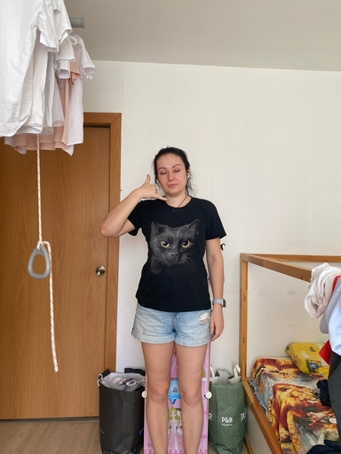
Convert image to a normalized tensor
# Convert the test image to a tensor
test_tensor = img_to_tensor(test_img, mean=mean, std=std)
# Print the shape of the resulting tensor
print(test_tensor.shape)torch.Size([1, 3, 512, 384])Before making any changes, let’s inspect the current model output.
Inspect raw model output
# Get the raw model output using the test tensor
model_output = model.cpu().forward_dummy(test_tensor.cpu())The model currently organizes the output into three tuples. The first tuple contains three tensors storing the object class predictions using the three stride values. Recall that there are 19 object classes, excluding the background class added by IceVision.
The second tuple contains three tensors with the predicted bounding box coordinates and dimensions using the three stride values.
The third tuple contains three tensors with the confidence score for whether an object is present in a given section of the input image using the three stride values.
# Print the shape for each tensor in the model output
for raw_out in model_output:
for out in raw_out:
print(out.shape)torch.Size([1, 19, 64, 48])
torch.Size([1, 19, 32, 24])
torch.Size([1, 19, 16, 12])
torch.Size([1, 4, 64, 48])
torch.Size([1, 4, 32, 24])
torch.Size([1, 4, 16, 12])
torch.Size([1, 1, 64, 48])
torch.Size([1, 1, 32, 24])
torch.Size([1, 1, 16, 12])512/8 = 64,512/16 = 32,512/32 = 16384/8 = 48,384/16 = 24,384/32 = 12
If we examine the end of a model from the official YOLOX repo, we can see the output looks a bit different.
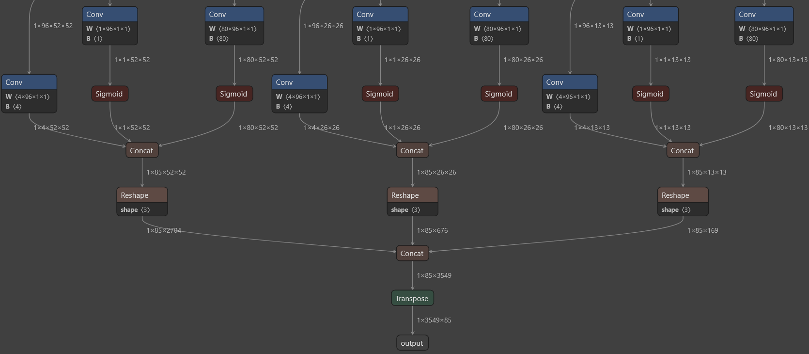
The official model first passes the tensors with the object class and “objectness” scores through sigmoid functions. It then combines the three tensors for each stride value into a single tensor before combining the resulting three tensors into a single flat array.
We can apply these same steps to our model by adding a new forward function using monkey patching.
Define custom forward function for exporting the model
def forward_export(self, input_tensor):
# Get raw model output
model_output = self.forward_dummy(input_tensor.cpu())
# Get the classification scores from the model output
cls_scores = model_output[0]
# Get the bounding box predictions from the model output
bbox_preds = model_output[1]
# Get the objectness scores from the model output
objectness = model_output[2]
# Process the stride 8 output
stride_8_cls = torch.sigmoid(cls_scores[0])
stride_8_bbox = bbox_preds[0]
stride_8_objectness = torch.sigmoid(objectness[0])
stride_8_cat = torch.cat((stride_8_bbox, stride_8_objectness, stride_8_cls), dim=1)
stride_8_flat = torch.flatten(stride_8_cat, start_dim=2)
# Process the stride 16 output
stride_16_cls = torch.sigmoid(cls_scores[1])
stride_16_bbox = bbox_preds[1]
stride_16_objectness = torch.sigmoid(objectness[1])
stride_16_cat = torch.cat((stride_16_bbox, stride_16_objectness, stride_16_cls), dim=1)
stride_16_flat = torch.flatten(stride_16_cat, start_dim=2)
# Process the stride 32 output
stride_32_cls = torch.sigmoid(cls_scores[2])
stride_32_bbox = bbox_preds[2]
stride_32_objectness = torch.sigmoid(objectness[2])
stride_32_cat = torch.cat((stride_32_bbox, stride_32_objectness, stride_32_cls), dim=1)
stride_32_flat = torch.flatten(stride_32_cat, start_dim=2)
# Concatenate all of the processed outputs
full_cat = torch.cat((stride_8_flat, stride_16_flat, stride_32_flat), dim=2)
# Return the concatenated outputs in a permuted form
return full_cat.permute(0, 2, 1)Add custom forward function to model
# Bind the forward_export method to the model object
model.forward_export = forward_export.__get__(model)Let’s verify the new forward function works as intended. The output should have a batch size of 1 and contain 4032 elements, given the input dimensions (calculated earlier), each with 24 values (19 classes + 1 objectness score + 4 bounding box values).
Verify output shape
# Call the forward_export method on the model object, passing in the test_tensor as an argument
# and get the shape of the output tensor
model.forward_export(test_tensor).shapetorch.Size([1, 4032, 24])We need to replace the current forward function before exporting the model. We can create a backup of the original forward function just in case.
Create a backup of the default model forward function
# Save the original forward method of the model
origin_forward = model.forwardReplace model forward function with custom function
# Replace the original forward method of the model with the forward_export method
model.forward = model.forward_exportVerify output shape
# Call the forward_export method on the model object, passing in the test_tensor as an argument
# and get the shape of the output tensor
model(test_tensor).shapetorch.Size([1, 4032, 24])Export the Model
The OpenVINO model conversion script does not support PyTorch models, so we need to export the trained model to ONNX. We can then convert the ONNX model to OpenVINO’s IR format.
Define ONNX file name
# Create a filename for the ONNX model
onnx_file_name = f"{dataset_name}-{type(model).__name__}.onnx"
# Display the filename
onnx_file_name'hagrid-sample-30k-384p-YOLOX.onnx'Export trained model to ONNX
# Export the PyTorch model to ONNX format
torch.onnx.export(model,
test_tensor,
onnx_file_name,
export_params=True,
opset_version=11,
do_constant_folding=True,
input_names = ['input'],
output_names = ['output'],
dynamic_axes={'input': {2 : 'height', 3 : 'width'}}
)Simplify ONNX model
# Import the onnx module
import onnx
# Import the simplify method from the onnxsim module
from onnxsim import simplify# Load the ONNX model from the onnx_file_name
onnx_model = onnx.load(onnx_file_name)
# Simplify the model
model_simp, check = simplify(onnx_model)
# Save the simplified model to the onnx_file_name
onnx.save(model_simp, onnx_file_name)Note: As mentioned earlier, this step is entirely optional.
Now we can export the ONNX model to OpenVINO’s IR format.
Import OpenVINO Dependencies
# Import the Core class from the openvino.runtime module
from openvino.runtime import Core# Import the Markdown and display classes from the IPython.display module
from IPython.display import Markdown, displayDefine export directory
# Create a Path object representing the current directory
output_dir = Path('./')
# Print the output_dir object
output_dirPath('.')The conversion script generates an XML file containing information about the model architecture and a BIN file that stores the trained weights. We need both files to perform inference. OpenVINO uses the same name for the BIN file as provided for the XML file.
Define path for OpenVINO IR xml model file
# Create a Path object representing the IR xml file using the ONNX model file name without the file extension
ir_path = Path(f"{onnx_file_name.split('.')[0]}.xml")
# Print the ir_path object
ir_pathPath('hagrid-sample-30k-384p-YOLOX.xml')OpenVINO provides the option to include the normalization stats in the IR model. That way, we don’t need to account for different normalization stats when performing inference with multiple models. We can also convert the model to FP16 precision to reduce file size and improve inference speed.
Define arguments for model conversion script
# Create the Model Optimizer command to convert the ONNX model to OpenVINO
mo_command = f"""mo
--input_model "{onnx_file_name}"
--input_shape "[1,3, {image_size}, {image_size}]"
--mean_values="{mean}"
--scale_values="{std}"
--data_type FP16
--output_dir "{output_dir}"
"""
# Remove extra whitespace from the command string
mo_command = " ".join(mo_command.split())
# Print the command and format it as a Bash code block
print("Model Optimizer command to convert the ONNX model to OpenVINO:")
display(Markdown(f"```bash\n{mo_command}\n```"))Model Optimizer command to convert the ONNX model to OpenVINO:mo --input_model "hagrid-sample-30k-384p-YOLOX.onnx" --input_shape "[1,3, 384, 384]" --mean_values="(0.485, 0.456, 0.406)" --scale_values="(0.229, 0.224, 0.225)" --data_type FP16 --output_dir "."Convert ONNX model to OpenVINO IR
# Check if the IR model file exists
if not ir_path.exists():
# If the IR model file does not exist, export the ONNX model to IR
print("Exporting ONNX model to IR... This may take a few minutes.")
mo_result = %sx $mo_command
print("\n".join(mo_result))
else:
# If the IR model file already exists, print a message
print(f"IR model {ir_path} already exists.")Exporting ONNX model to IR... This may take a few minutes.
Model Optimizer arguments:
Common parameters:
- Path to the Input Model: /media/innom-dt/Samsung_T3/Projects/GitHub/icevision-openvino-unity-tutorial/notebooks/hagrid-sample-30k-384p-YOLOX.onnx
- Path for generated IR: /media/innom-dt/Samsung_T3/Projects/GitHub/icevision-openvino-unity-tutorial/notebooks/.
- IR output name: hagrid-sample-30k-384p-YOLOX
- Log level: ERROR
- Batch: Not specified, inherited from the model
- Input layers: Not specified, inherited from the model
- Output layers: Not specified, inherited from the model
- Input shapes: [1,3, 384, 384]
- Source layout: Not specified
- Target layout: Not specified
- Layout: Not specified
- Mean values: (0.485, 0.456, 0.406)
- Scale values: (0.229, 0.224, 0.225)
- Scale factor: Not specified
- Precision of IR: FP16
- Enable fusing: True
- User transformations: Not specified
- Reverse input channels: False
- Enable IR generation for fixed input shape: False
- Use the transformations config file: None
Advanced parameters:
- Force the usage of legacy Frontend of Model Optimizer for model conversion into IR: False
- Force the usage of new Frontend of Model Optimizer for model conversion into IR: False
OpenVINO runtime found in: /home/innom-dt/mambaforge/envs/icevision/lib/python3.8/site-packages/openvino
OpenVINO runtime version: 2022.1.0-7019-cdb9bec7210-releases/2022/1
Model Optimizer version: 2022.1.0-7019-cdb9bec7210-releases/2022/1
[ WARNING ]
Detected not satisfied dependencies:
numpy: installed: 1.23.1, required: < 1.20
Please install required versions of components or run pip installation
pip install openvino-dev
[ SUCCESS ] Generated IR version 11 model.
[ SUCCESS ] XML file: /media/innom-dt/Samsung_T3/Projects/GitHub/icevision-openvino-unity-tutorial/notebooks/hagrid-sample-30k-384p-YOLOX.xml
[ SUCCESS ] BIN file: /media/innom-dt/Samsung_T3/Projects/GitHub/icevision-openvino-unity-tutorial/notebooks/hagrid-sample-30k-384p-YOLOX.bin
[ SUCCESS ] Total execution time: 0.47 seconds.
[ SUCCESS ] Memory consumed: 115 MB.
It's been a while, check for a new version of Intel(R) Distribution of OpenVINO(TM) toolkit here https://software.intel.com/content/www/us/en/develop/tools/openvino-toolkit/download.html?cid=other&source=prod&campid=ww_2022_bu_IOTG_OpenVINO-2022-1&content=upg_all&medium=organic or on the GitHub*
[ INFO ] The model was converted to IR v11, the latest model format that corresponds to the source DL framework input/output format. While IR v11 is backwards compatible with OpenVINO Inference Engine API v1.0, please use API v2.0 (as of 2022.1) to take advantage of the latest improvements in IR v11.
Find more information about API v2.0 and IR v11 at https://docs.openvino.aiVerify OpenVINO Inference
Now, we can verify the OpenVINO model works as desired using the test image.
Get available OpenVINO compute devices
# Create an instance of the Core class
ie = Core()
# Get the list of available devices
devices = ie.available_devices
# Iterate over the available devices
for device in devices:
# Get the device name
device_name = ie.get_property(device_name=device, name="FULL_DEVICE_NAME")
# Print the device and its name
print(f"{device}: {device_name}")CPU: 11th Gen Intel(R) Core(TM) i7-11700K @ 3.60GHzPrepare input image for OpenVINO IR model
# Convert image to tensor
img_tensor = torch.Tensor(np.array(test_img)).permute(2, 0, 1)
# Scale pixels values from [0,255] to [0,1]
scaled_tensor = img_tensor.float().div_(255)# Add an extra dimension to the Tensor
input_image = scaled_tensor.unsqueeze(dim=0)
# Print the shape of the input image
input_image.shapetorch.Size([1, 3, 512, 384])Test OpenVINO IR model
# Create an instance of the Core class
ie = Core()
# Read the IR model file
model_ir = ie.read_model(model=ir_path)
# Reshape the model to match the shape of the input image
model_ir.reshape(input_image.shape)
# Compile the model for the CPU device
compiled_model_ir = ie.compile_model(model=model_ir, device_name="CPU")
# Get the input and output layers of the compiled model
input_layer_ir = next(iter(compiled_model_ir.inputs))
output_layer_ir = next(iter(compiled_model_ir.outputs))
# Run the model on the input image and get the output
res_ir = compiled_model_ir([input_image])[output_layer_ir]# Print the shape of the model output
res_ir.shape(1, 4032, 24)The output shape is correct, meaning we can move on to the post-processing steps.
Define Post-processing Steps
To process the model output, we need to iterate through each of the 4032 object proposals and save the ones that meet a user-defined confidence threshold (e.g., 50%). We then filter out the redundant proposals (i.e., detecting the same object multiple times) from that subset using Non-Maximum Suppression (NMS).
We’ll first define a method that generates offset values based on the input dimensions and stride values, which we can use to traverse the output array.
Define method to generate offset values to navigate the raw model output
def generate_grid_strides(height, width, strides=[8, 16, 32]):
"""
Generate a list of dictionaries containing grid coordinates and strides for a given height and width.
Args:
height (int): The height of the image.
width (int): The width of the image.
strides (list): A list of strides to use for generating grid coordinates.
Returns:
list: A list of dictionaries containing grid coordinates and strides.
"""
# Create an empty list to store the grid coordinates and strides
grid_strides = []
# Iterate over the strides
for stride in strides:
# Calculate the grid height and width
grid_height = height // stride
grid_width = width // stride
# Iterate over the grid coordinates
for g1 in range(grid_height):
for g0 in range(grid_width):
# Append a dictionary containing the grid coordinates and stride to the list
grid_strides.append({'grid0':g0, 'grid1':g1, 'stride':stride })
# Return the list of dictionaries
return grid_stridesGenerate offset values to navigate model output
# Generate the grid coordinates and strides
grid_strides = generate_grid_strides(test_img.height, test_img.width, strides)
# Print the length of the list of grid coordinates and strides
len(grid_strides)4032# Print the first few rows of the list using a DataFrame
pd.DataFrame(grid_strides).head()| grid0 | grid1 | stride | |
|---|---|---|---|
| 0 | 0 | 0 | 8 |
| 1 | 1 | 0 | 8 |
| 2 | 2 | 0 | 8 |
| 3 | 3 | 0 | 8 |
| 4 | 4 | 0 | 8 |
Next, we’ll define a method to iterate through the output array and decode the bounding box information for each object proposal. As mentioned earlier, we’ll only keep the ones with a high enough confidence score. The model predicts the center coordinates of a bounding box, but we’ll store the coordinates for the top-left corner as that is what the ImageDraw.Draw.rectangle() method expects as input.
Define method to generate object detection proposals from the raw model output
def generate_yolox_proposals(model_output, proposal_length, grid_strides, bbox_conf_thresh=0.3):
"""
Generate a list of bounding box proposals from the model output.
Args:
model_output (numpy array): The output of the YOLOX model.
proposal_length (int): The length of each proposal in the model output.
grid_strides (list): A list of dictionaries containing grid coordinates and strides.
bbox_conf_thresh (float): The confidence threshold for bounding box proposals.
Returns:
list: A list of bounding box proposals.
"""
# Create an empty list to store the bounding box proposals
proposals = []
# Calculate the number of classes
num_classes = proposal_length - 5
# Iterate over the grid coordinates and strides
for anchor_idx in range(len(grid_strides)):
# Get the grid coordinates and stride for the current anchor
grid0 = grid_strides[anchor_idx]['grid0']
grid1 = grid_strides[anchor_idx]['grid1']
stride = grid_strides[anchor_idx]['stride']
# Calculate the starting index for the current anchor in the model output
start_idx = anchor_idx * proposal_length
# Get the coordinates for the center of the predicted bounding box
x_center = (model_output[start_idx + 0] + grid0) * stride
y_center = (model_output[start_idx + 1] + grid1) * stride
# Get the dimensions for the predicted bounding box
w = np.exp(model_output[start_idx + 2]) * stride
h = np.exp(model_output[start_idx + 3]) * stride
# Calculate the coordinates for the upper left corner of the bounding box
x0 = x_center - w * 0.5
y0 = y_center - h * 0.5
# Get the objectness score for the current anchor
box_objectness = model_output[start_idx + 4]
# Create an empty dictionary to store the bounding box proposal
obj = { 'x0':x0, 'y0':y0, 'width':w, 'height':h, 'label':0, 'prob':0 }
# Iterate over the classes
for class_idx in range(num_classes):
# Calculate the probability of the current class
box_cls_score = model_output[start_idx + 5 + class_idx]
box_prob = box_objectness * box_cls_score
# If the probability is greater than the current maximum, update the proposal dictionary
if (box_prob > obj['prob']):
obj['label'] = class_idx
obj['prob'] = box_prob
# If the bounding box proposal has a probability greater than the specified threshold, add it to the list of proposals
if obj['prob'] > bbox_conf_thresh: proposals.append(obj)
# Sort the list of bounding box proposals by probability in descending order
proposals.sort(key=lambda x:x['prob'], reverse=True)
return proposalsDefine minimum confidence score for keeping bounding box proposals
# Set the bounding box confidence threshold
bbox_conf_thresh = 0.5Process raw model output
# Generate proposals from the model output
proposals = generate_yolox_proposals(res_ir.flatten(), res_ir.shape[2], grid_strides, bbox_conf_thresh)
# Convert the proposals to a Pandas DataFrame
proposals_df = pd.DataFrame(proposals)
# Add the label names to the DataFrame
proposals_df['label'] = proposals_df['label'].apply(lambda x: labels[x])
# Print the proposals Dataframe
proposals_df| x0 | y0 | width | height | label | prob | |
|---|---|---|---|---|---|---|
| 0 | 234.084399 | 345.059397 | 19.638884 | 40.022980 | no_gesture | 0.887864 |
| 1 | 234.122849 | 344.858476 | 19.512623 | 40.319473 | no_gesture | 0.887479 |
| 2 | 233.998906 | 344.849410 | 19.742203 | 39.664391 | no_gesture | 0.879032 |
| 3 | 154.565092 | 193.542165 | 35.063389 | 34.609722 | call | 0.876051 |
| 4 | 154.257556 | 193.482616 | 35.451900 | 34.860138 | call | 0.867827 |
| 5 | 154.484365 | 193.435712 | 34.926231 | 35.332264 | call | 0.866654 |
| 6 | 234.141719 | 344.954988 | 19.724554 | 40.226116 | no_gesture | 0.865423 |
| 7 | 233.691895 | 344.861304 | 20.142962 | 40.653099 | no_gesture | 0.857602 |
| 8 | 154.580361 | 193.261580 | 34.681351 | 35.288120 | call | 0.847856 |
| 9 | 233.792754 | 344.441489 | 20.184782 | 40.635910 | no_gesture | 0.829289 |
| 10 | 154.467418 | 193.468482 | 35.273167 | 34.796146 | call | 0.829163 |
| 11 | 154.234487 | 193.324329 | 35.518040 | 34.588329 | call | 0.816633 |
| 12 | 155.282080 | 193.360302 | 34.524830 | 35.269939 | call | 0.804335 |
| 13 | 233.925717 | 344.809189 | 19.701090 | 40.598907 | no_gesture | 0.779452 |
| 14 | 233.717521 | 344.739007 | 20.083487 | 40.492405 | no_gesture | 0.736652 |
| 15 | 154.407403 | 193.529026 | 34.728149 | 33.798748 | call | 0.687202 |
We know the test image contains one call gesture and one idle hand. The model seems pretty confident about the locations of those two hands as the bounding box values are nearly identical across the no_gesture predictions and among the call predictions.
We can filter out the redundant predictions by checking how much the bounding boxes overlap. When two bounding boxes overlap beyond a user-defined threshold, we keep the one with a higher confidence score.
Define function to calculate the union area of two bounding boxes
def calc_union_area(a, b):
# Find the minimum x-coordinate of the two rectangles
x = min(a['x0'], b['x0'])
# Find the minimum y-coordinate of the two rectangles
y = min(a['y0'], b['y0'])
# Find the maximum x-coordinate of the two rectangles
w = max(a['x0']+a['width'], b['x0']+b['width']) - x
# Find the maximum y-coordinate of the two rectangles
h = max(a['y0']+a['height'], b['y0']+b['height']) - y
# Return the area of the combined rectangle
return w*hDefine function to calculate the intersection area of two bounding boxes
def calc_inter_area(a, b):
# Find the maximum x-coordinate of the two rectangles
x = max(a['x0'], b['x0'])
# Find the maximum y-coordinate of the two rectangles
y = max(a['y0'], b['y0'])
# Find the minimum x-coordinate of the two rectangles
w = min(a['x0']+a['width'], b['x0']+b['width']) - x
# Find the minimum y-coordinate of the two rectangles
h = min(a['y0']+a['height'], b['y0']+b['height']) - y
# Return the area of the intersecting rectangle
return w*hDefine function to sort bounding box proposals using Non-Maximum Suppression
def nms_sorted_boxes(nms_thresh=0.45):
# Initialize a list to store the indices of the proposals to keep
proposal_indices = []
# Loop over all proposals in the input list
for i in range(len(proposals)):
# Get the ith proposal
a = proposals[i]
# Assume that we want to keep this proposal by default
keep = True
# Loop over the indices of the proposals that we want to keep
for j in proposal_indices:
# Get the jth proposal
b = proposals[j]
# Compute the area of the intersection of the ith and jth proposals
inter_area = calc_inter_area(a, b)
# Compute the area of the union of the ith and jth proposals
union_area = calc_union_area(a, b)
# If the intersection of the ith and jth proposals is more than the specified non-max suppression
# threshold, we don't want to keep the ith proposal
if inter_area / union_area > nms_thresh:
keep = False
# If we want to keep the ith proposal, append its index to the list of proposal indices
if keep:
proposal_indices.append(i)
# Return the list of proposal indices
return proposal_indicesDefine threshold for sorting bounding box proposals
# Set the non-max suppression threshold
nms_thresh = 0.45Sort bouning box proposals using NMS
# Apply non-max suppression to the list of proposals with the specified non-max suppression threshold
proposal_indices = nms_sorted_boxes(nms_thresh)
# Print the list of proposal indices
print(proposal_indices)[0, 3]Filter excluded bounding box proposals
# Print the rows from the proposals DataFrame that correspond to the indices
# returned by the non-max suppression algorithm
proposals_df.iloc[proposal_indices]| x0 | y0 | width | height | label | prob | |
|---|---|---|---|---|---|---|
| 0 | 234.084399 | 345.059397 | 19.638884 | 40.022980 | no_gesture | 0.887864 |
| 3 | 154.565092 | 193.542165 | 35.063389 | 34.609722 | call | 0.876051 |
Now we have a single prediction for an idle hand and a single prediction for a call sign.
Generate Colormap
Before we annotate the input image with the predicted bounding boxes, let’s generate a colormap for the object classes.
Import library for generating color palette
# Import the distinctipy module
from distinctipy import distinctipyGenerate a visually distinct color for each label
# Use the distinctipy module to generate a list of colors with a length equal to the number of labels
colors = distinctipy.get_colors(len(labels))Display the generated color palette
# Use the distinctipy module to generate a color swatch using the list of colors
distinctipy.color_swatch(colors)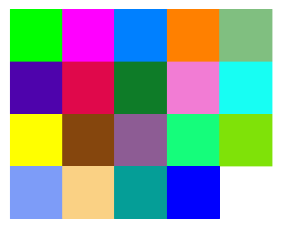
Set precision for color values
# Set the precision to 5 decimal places
precision = 5Round color values to specified precision
# Round the values in the list of colors to the specified precision
colors = [[np.round(ch, precision) for ch in color] for color in colors]
# Display the rounded list of colors using a Pandas Dataframe
pd.DataFrame(colors)| 0 | 1 | 2 | |
|---|---|---|---|
| 0 | 0.00000 | 1.00000 | 0.00000 |
| 1 | 1.00000 | 0.00000 | 1.00000 |
| 2 | 0.00000 | 0.50000 | 1.00000 |
| 3 | 1.00000 | 0.50000 | 0.00000 |
| 4 | 0.50000 | 0.75000 | 0.50000 |
| 5 | 0.32114 | 0.03531 | 0.64056 |
| 6 | 0.80830 | 0.00115 | 0.02081 |
| 7 | 0.02177 | 0.42475 | 0.33483 |
| 8 | 0.72261 | 0.47583 | 0.99531 |
| 9 | 0.99715 | 0.97599 | 0.25699 |
| 10 | 0.00000 | 1.00000 | 1.00000 |
| 11 | 0.00000 | 1.00000 | 0.50000 |
| 12 | 0.65521 | 0.34251 | 0.38036 |
| 13 | 0.96712 | 0.62955 | 0.52852 |
| 14 | 0.48445 | 0.84111 | 0.01565 |
| 15 | 0.00000 | 0.00000 | 1.00000 |
| 16 | 0.54362 | 0.96123 | 0.90460 |
| 17 | 0.36779 | 0.44128 | 0.00059 |
| 18 | 0.97231 | 0.10181 | 0.49080 |
Annotate image using bounding box proposals
# Create a copy of the test image
annotated_img = test_img.copy()
# Create a drawing context for the annotated image
draw = ImageDraw.Draw(annotated_img)
# Set the font size for the labels
fnt_size = 25
# Loop over the indices of the proposals that were selected by the non-max suppression algorithm
for i in proposal_indices:
# Get the bounding box coordinates, label, and confidence score of the ith proposal
x, y, w, h, l, p = proposals[i].values()
# Compute the shape of the bounding box
shape = (x, y, x+w, y+h)
# Get the color for the ith proposal's label
color = tuple([int(ch*255) for ch in colors[proposals[i]['label']]])
# Draw the bounding box on the annotated image using the computed shape and color
draw.rectangle(shape, outline=color)
# Create a font object using the selected font and font size
fnt = PIL.ImageFont.truetype("KFOlCnqEu92Fr1MmEU9vAw.ttf", fnt_size)
# Draw the label and confidence score on the annotated image using the font, color, and bounding box coordinates
draw.multiline_text((x, y-fnt_size*2-5), f"{labels[l]}\n{p*100:.2f}%", font=fnt, fill=color)
# Print the size of the annotated image
print(annotated_img.size)
# Display the annotated image
annotated_img(384, 512)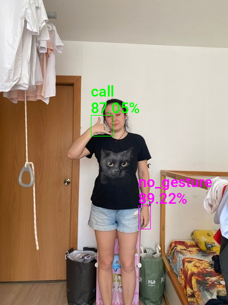
Benchmark OpenVINO IR CPU inference speed
%%timeit
# Time how long it takes to run the compiled model on the input image
# and extract the output from the specified layer
compiled_model_ir([input_image])[output_layer_ir] 12 ms ± 42.7 µs per loop (mean ± std. dev. of 7 runs, 100 loops each)We can export the colormap to a JSON file and import it into the Unity project. That way, we can easily swap colormaps for models trained on different datasets without changing any code.
Create JSON colormap
# Initialize the color map with an empty list of items
color_map = {'items': list()}
# Populate the color map with the labels and colors
color_map['items'] = [{'label': label, 'color': color} for label, color in zip(labels, colors)]
# Print the color map
color_map{'items': [{'label': 'call', 'color': [0.0, 1.0, 0.0]},
{'label': 'no_gesture', 'color': [1.0, 0.0, 1.0]},
{'label': 'dislike', 'color': [0.0, 0.5, 1.0]},
{'label': 'fist', 'color': [1.0, 0.5, 0.0]},
{'label': 'four', 'color': [0.5, 0.75, 0.5]},
{'label': 'like', 'color': [0.32114, 0.03531, 0.64056]},
{'label': 'mute', 'color': [0.8083, 0.00115, 0.02081]},
{'label': 'ok', 'color': [0.02177, 0.42475, 0.33483]},
{'label': 'one', 'color': [0.72261, 0.47583, 0.99531]},
{'label': 'palm', 'color': [0.99715, 0.97599, 0.25699]},
{'label': 'peace', 'color': [0.0, 1.0, 1.0]},
{'label': 'peace_inverted', 'color': [0.0, 1.0, 0.5]},
{'label': 'rock', 'color': [0.65521, 0.34251, 0.38036]},
{'label': 'stop', 'color': [0.96712, 0.62955, 0.52852]},
{'label': 'stop_inverted', 'color': [0.48445, 0.84111, 0.01565]},
{'label': 'three', 'color': [0.0, 0.0, 1.0]},
{'label': 'three2', 'color': [0.54362, 0.96123, 0.9046]},
{'label': 'two_up', 'color': [0.36779, 0.44128, 0.00059]},
{'label': 'two_up_inverted', 'color': [0.97231, 0.10181, 0.4908]}]}Export colormap
# Import the json module
import json
# Set the name of the file to which the color map will be written
color_map_file_name = f"{dataset_path.name}-colormap.json"
# Open the file in write mode
with open(color_map_file_name, "w") as write_file:
# Write the color map to the file as JSON
json.dump(color_map, write_file)
# Print the name of the file that the color map was written to
print(color_map_file_name)'hagrid-sample-30k-384p-colormap.json'Summary
We now have a template to train a YOLOX model using IceVision and export it to OpenVINO. We started by setting up a Conda environment and importing the necessary dependencies. Then, we configured the Kaggle API to download the dataset and created a parser to process the data. We defined DataLoader objects and fine-tuned the model before preparing it for export. We implemented post-processing steps for the model output and generated a colormap to visualize model predictions. In part 2, we will learn how to create a dynamic link library (DLL) file in Visual Studio to perform object detection with our YOLOX model using OpenVINO.
Beginner Tutorial: Fastai to Unity Beginner Tutorial Pt. 1
Next: End-to-End Object Detection for Unity With IceVision and OpenVINO Pt. 2
Alternative Next: Object Detection for Unity With ONNX Runtime and DirectML Pt. 1
Project Resources: GitHub Repository